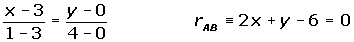
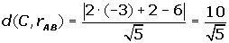

Ejercicios y problemas resueltos de ecuaciones de la recta II
1Calcula la distancia del punto P(2, −1) a la recta r de ecuación 3x + 4y = 0.
2Hallar la distancia entre r ≡ 3x − 4y + 4 = 0 y s ≡ 9x − 12y − 4 = 0.
3Calcular el ángulo que forman las rectas r y s, sabiendo que sus vectores directores son:  = (−2, 1) y
= (−2, 1) y  = (2, −3).
= (2, −3).
4Calcula el ángulo que forman las rectas r ≡ x + 3y − 2 = 0 y s ≡ 2x − 3y + 5 = 0.
5Hallar una recta paralela y otra perpendicular a r ≡ x + 2y + 3 = 0, que pasen por el punto A(3, 5).
6Hallar la ecuación de la mediatriz del segmento de extremos A(2, 5) y B(4, −7).
7Hallar las ecuaciones de las bisectrices de los ángulos que determinan las rectas r ≡ 3x − 4y + 5 = 0 y s ≡ 6x + 8y + 1 = 0.
8Calcular la ecuación de la recta perpendicular a r ≡ 8x − y − 1 = 0 y pasa por el punto P(−3, 2).
9Una recta de ecuación r ≡ x + 2y − 9 = 0 es mediatriz de un segmento AB cuyo extremo A tiene por coordenadas (2, 1). Hallar las coordenadas del otro extremo.
10Halla el punto simétrico A', del punto A (3, 2), respecto de la recta r ≡ 2x + y − 12 = 0.
11Hallar el ángulo que forman las rectas que tienen por ecuaciones:
1
2
12Hallar el ángulo que forman las rectas que tienen por ecuaciones:
1
2 
13Dadas las rectas r ≡ 3x + y − 1 = 0 y s ≡ 2x + my − 8 = 0, determinar m para que formen un ángulo de 45°.
14Una recta es paralela a la que tiene por ecuación r ≡ 5x + 8y − 12 = 0, y dista 6 unidades del origen. ¿Cuál es su ecuación?
15Una recta es perpendicular a la que tiene por ecuación r ≡ 5x − 7y + 12 = 0 y dista 4 unidades del origen. ¿Cuál es su ecuación?
16Se tiene el cuadrilátero ABCD cuyos vértices son A(3, 0), B(1, 4), C(−3, 2) y D(−1, −2). Calcular su área.
17Dado el triángulo A(−1, −1), B(7, 5), C(2, 7); calcular las ecuaciones de las alturas y determinar el ortocentro del triángulo.
18Calcular las bisectrices de los ángulos determinados por la rectas:

Más ejercicios y problemas de la ecuación de la recta
- 1
- 2
- 3
- 4
- 5
- 6
- 7
- 8
- 9
- 10
- 11
- 12
- 13
- 14
- 15
- 16
- 17
- 18
Ejercicio 1 resuelto
Calcula la distancia del punto P(2, −1) a la recta r de ecuación 3x + 4 y = 0.
Ejercicio 2 resuelto
Hallar la distancia entre r ≡ 3x − 4y + 4 = 0 y s ≡ 9x − 12y − 4 = 0.
Ejercicio 3 resuelto
Calcular el ángulo que forman las rectas r y s, sabiendo que sus vectores directores son:  = (−2, 1) y
= (−2, 1) y  =(2, −3).
=(2, −3).
Ejercicio 4 resuelto
Calcula el ángulo que forman las rectas r≡ x + 3y − 2 = 0 y s≡ 2x − 3y + 5 = 0.
Ejercicio 5 resuelto
Hallar una recta paralela y otra perpendicular a r ≡ x + 2y + 3 = 0, que pasen por el punto A(3, 5).
Ejercicio 6 resuelto
Hallar la ecuación de la mediatriz del segmento de extremos A(2, 5) y B(4, −7).
Ejercicio 7 resuelto
Hallar las ecuaciones de las bisectrices de los ángulos que determinan las rectas r ≡ 3x − 4y + 5 = 0 y s ≡ 6x + 8y + 1 = 0.
Ejercicio 8 resuelto
Calcular la ecuación de la recta perpendicular a r ≡ 8x − y − 1 = 0 y pasa por el punto P(−3, 2).

Ejercicio 9 resuelto
Una recta de ecuación r ≡ x + 2y − 9 = 0 es mediatriz de un segmento AB cuyo extremo A tiene por coordenadas (2, 1). Hallar las coordenadas del otro extremo.


Ejercicio 10 resuelto
Halla el punto simétrico A', del punto A (3, 2), respecto de la recta r ≡ 2x + y − 12 = 0.


Ejercicio 11 resuelto
Hallar el ángulo que forman las rectas que tienen por ecuaciones:
1
2
Ejercicio 12 resuelto
Hallar el ángulo que forman las rectas que tienen por ecuaciones:
1

2 
Ejercicio 13 resuelto
Dadas las rectas r ≡ 3x + y − 1 = 0 y s ≡ 2 x + my − 8 = 0, determinar m para que formen un ángulo de 45°.


Ejercicio 14 resuelto
Una recta es paralela a la que tiene por ecuación r ≡ 5x + 8y − 12 = 0, y dista 6 unidades del origen. ¿Cuál es su ecuación?


Ejercicio 15 resuelto
Una recta es perpendicular a la que tiene por ecuación r ≡ 5x − 7y + 12 = 0 y dista 4 unidades del origen. ¿Cuál es su ecuación?


Ejercicio 16 resuelto
Se tiene el cuadrilátero ABCD cuyos vértices son A(3, 0), B(1, 4), C(−3, 2) y D(−1, −2). Calcular su área.




Ejercicio 17 resuelto
Dado el triángulo A(−1, −1), B(7, 5), C(2, 7); calcular las ecuaciones de las alturas y determinar el ortocentro del triángulo.


Ejercicio 18 resuelto
Calcular las bisectrices de los ángulos determinados por la rectas:


 Ejercicios
Ejercicios